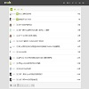
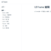

李
仲
谦
1年前端开发经验，熟悉Vue技术栈，熟练模块化，工程化开发流程，
掌握Webpack配置，熟练使用ES6写代码，有小程序、移动端开发经验。
履历
- 2008.09 -- 2011.07
- 广东食品药品职业学院
- 2012.11 -- 至今
- 天河客运站：任职天河客运站快件中心，负责日常维护客户资料数据，货物出入仓数据管理。
个人项目经验


微信小程序：miniclock
该项目是微信开发的一个小工具，我在开发期间，对主要的功能进行分类抽离并封装成组件，并通过首页数据接入api，实现一键登录功能。
技术栈：微信web开发,JS,ES6,移动端
<<--扫描二维码立刻查看 Code